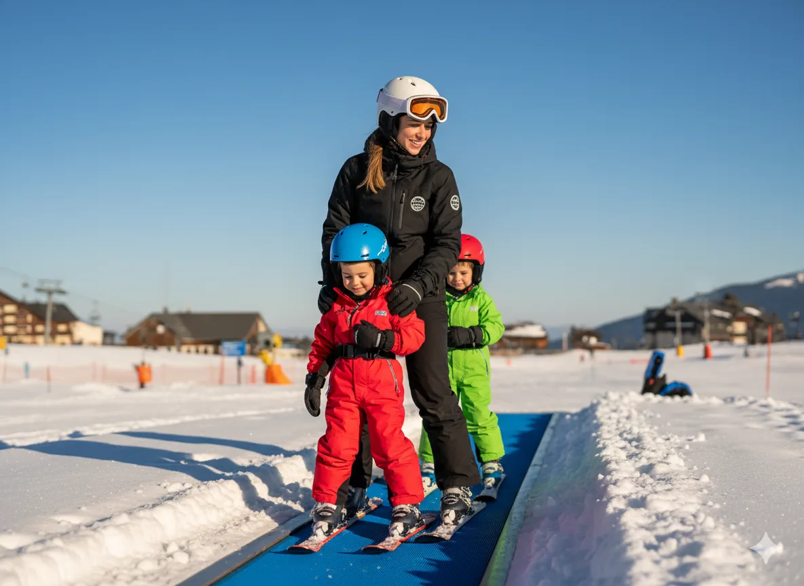

Índice
- Baqueira: a progressão perfeita para aprender passo a passo
- Beret: amplitude, conforto e passe reduzido para iniciantes
- Bonaigua: ideal para as primeiras horas
- Acessos, parques de estacionamento e serviços para famílias
- Dicas de especialista: erros comuns e como evitá-los
- Perguntas frequentes (FAQs)
- Conclusão: comece a sua aprendizagem com segurança
Baqueira: a progressão perfeita para aprender passo a passo
O setor de Baqueira 1800 é provavelmente o mais completo para um iniciante, com uma progressão muito bem marcada que permite consolidar a técnica passo a passo.
Progressão em Baqueira
- Passadeira para iniciantes atrás do infantário: um local quase plano, perfeito para a primeira hora de esqui.
- Passadeiras de Carreretes 1 e 2: pistas verdes muito fáceis onde começar a praticar as primeiras viragens em cunha.
- Teleférico de Rabada: aqui trabalha-se a cunha avançada e o início do paralelo.
- Era Cabana (cadeira desembraiável de 4 lugares): pista verde difícil e azul muito fácil, ideal para consolidar o paralelo em percursos mais longos e variados.
👉 Dica da Alpine Ski Academy: em Baqueira encontrará pistas um pouco mais estreitas e movimentadas em dias de grande afluência, mas são ideais para praticar todo o tipo de teleféricos e progredir de forma ordenada.
Beret: amplitude, conforto e passe reduzido para iniciantes
O setor de Beret é muito apreciado pelos principiantes pela sua amplitude, boa visibilidade e menor afluência de pessoas.

Progressão em Beret
- Passadeira para iniciantes: zona ampla, plana e perfeita para o primeiro contacto.
- Teleférico de vara para iniciantes: dá acesso a uma pista verde longa, larga e muito confortável para encadear viragens e ganhar confiança.
- Clot der Os (cadeira desembraiável de 4 lugares): leva a cotas mais altas, mas sem um professor que conheça bem o itinerário, pode acabar em pistas não adequadas para o seu nível.
Além disso, Beret oferece um passe reduzido para iniciantes, ideal para o seu primeiro dia se ainda não for explorar o resto da estância.

Bonaigua: ideal para as primeiras horas
O setor de Bonaigua tem um início muito confortável para principiantes:

Progressão em Bonaigua
- Telecorda para iniciantes: perfeito para os primeiros apoios em cunha.
- Cadeira de dois lugares (paragem intermédia): pista verde muito curta e simples, ideal para as duas primeiras horas de aprendizagem.
A partir daqui, a progressão complica-se: a opção seguinte é Argulls (pista azul fácil, mas longa e com tráfego de esquiadores mais rápidos). Isto torna-a menos adequada para um iniciante no seu terceiro dia, em comparação com a progressão muito mais lógica de Baqueira e Beret.
Acessos, parques de estacionamento e serviços para famílias
- Baqueira 1800: é preciso subir de telecabina (passe de passeio aprox. 21 € para os acompanhantes que não esquiam). Zonas de cafetaria junto às pistas para iniciantes, ideal para pausas. Parque de estacionamento descoberto gratuito (requer uma caminhada até à cadeira) e opção coberta paga (cerca de 15 €, mais cómoda).
- Beret: acesso direto de carro, parque de estacionamento descoberto gratuito. Ponto de encontro em frente à torre de controlo de passes e aluguer de material junto às pistas.
- Bonaigua: parque de estacionamento descoberto gratuito mesmo em frente à cafetaria. Acesso direto a pé do carro e ambiente familiar.
👉 Para as aulas, na Alpine Ski Academy costumamos marcar pontos de encontro em:
- Baqueira: saída superior da telecabina (cota 1800).
- Beret: torre de controlo (em frente às bilheteiras de passes).
- Bonaigua: em frente à cafetaria (cota 2072).
Dicas de especialista: erros comuns e como evitá-los
- Não começar com um professor: os primeiros passos são a base do seu futuro como esquiador. Um mau início cria bloqueios, medos e maus hábitos que depois custam muito a corrigir.
- Saltar progressões demasiado cedo: subir para uma pista azul sem dominar a cunha avançada é uma das causas mais comuns de sustos e frustrações.
- Escolher mal o horário: se só tem 2–3 horas ou quer evitar multidões, recomendamos que comece as aulas a partir das 13:45. A partir das 13:30 há um passe reduzido e as pistas ficam muito mais vazias.
- Condições da neve: cada setor e cada momento do dia oferecem qualidades diferentes (mais dura de manhã, mais mole ao meio-dia). Na Alpine Ski Academy, guiamos sempre os nossos alunos para a melhor zona em cada momento.
Perguntas frequentes (FAQs)
Onde alugar material de esqui?
Em Beret, há um aluguer muito conveniente junto às pistas. Para mais opções em Ruda e Vielha, consulte o nosso artigo sobre aluguer de material de esqui em Baqueira.
É melhor começar em grupo ou numa aula particular?
Uma aula particular acelera a aprendizagem, evita medos e adapta-se 100% ao seu nível. Para iniciantes, é o melhor investimento. Descubra mais no nosso artigo sobre como aprender a esquiar em Baqueira.
Conclusão: comece a sua aprendizagem com segurança
Cada setor tem o seu encanto, mas a progressão lógica e segura encontra-se em Baqueira e Beret. Conhecer os teleféricos adequados e mudar de pista no momento certo é fundamental para que a sua experiência seja divertida e sem bloqueios.
Na Alpine Ski Academy, somos especialistas em guiá-lo em cada passo desse caminho. Connosco, aprenderá não só a técnica, mas também a mover-se pela estância com confiança e segurança.
Conheça os nossos instrutores e reserve a sua aula